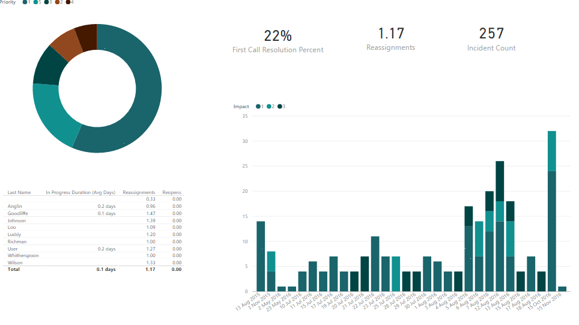

Self-serve
- Get started instantly online. Connect to ServiceNow and reporting data will be available as soon as the data has been processed. Data is continually synchronized and available for reporting within an hour of any change in ServiceNow.
- Pre-built analytics in Tableau. Download workbooks that connect to your service now data
- Self service customization in the tools you are familiar with: Tableau, PowerBI, Excel and most other tools
Analytics to help you improve and make informed decisions
- Designed for both management and operational staff
- Useful and actionable analytics for
- incident
- resolution
- volume, age (historically)
- deflection, escalation
- agents, costs and workload
- service availability
- change/release management
- incident

Customize for your needs
- We can customize any part of your solution. Need new metrics, adjustments to analytics, or Salesforce data, or to automate an excel report? Just ask
- Enhance and build analytics in Tableau and other BI tools you already use
- Using the clean, simple and fast reporting database
- With metrics that can defined at any time and compared historically